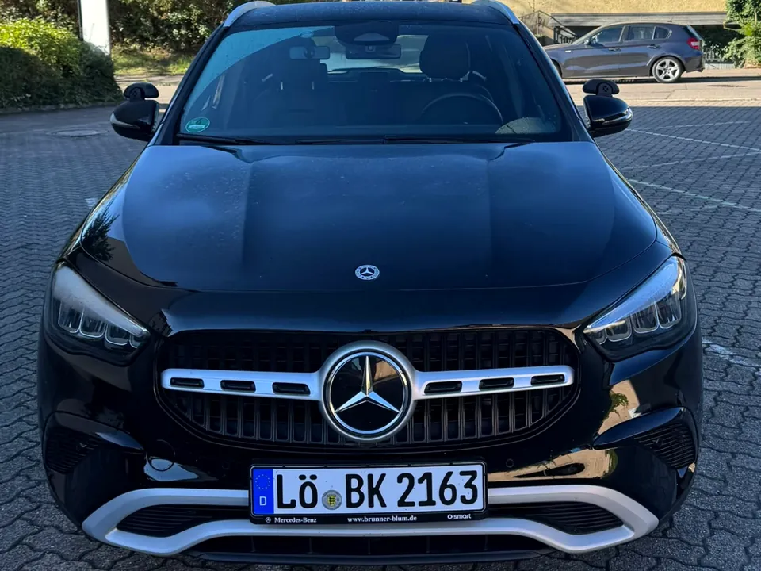

Führerscheinklassen B, B78, B197 und BE in Weil am Rhein
Egal ob klassischer Autoführerschein, Automatik mit Eintrag, Automatik ohne Eintrag oder Anhänger: Hier findest du alles, was du vor der Anmeldung wissen musst. Unterricht auf Deutsch, Englisch, Türkisch oder Kurdisch.
Klasse B – der Autoführerschein (auch mit 17)
Mit Klasse B fährst du PKW bis 3,5 t zulässiger Gesamtmasse und bis zu 8 Fahrgastplätzen – mit Anhänger bis 750 kg, oder schwerer, solange das Gespann 3,5 t nicht übersteigt. Eingeschlossen sind außerdem die Klassen AM (Roller bis 45 km/h) und L (Traktoren bis 40 km/h).
Begleitetes Fahren ab 17 (BF17)
Du kannst die Ausbildung schon mit 16½ beginnen und mit 17 die Prüfung machen. Bis zum 18. Geburtstag fährst du dann mit einer eingetragenen Begleitperson. Wer mit 17 anfängt, hat mit 18 schon ein Jahr Fahrpraxis.
Voraussetzungen
- Mindestalter 17 Jahre (BF17) bzw. 18 Jahre – Anmeldung ein halbes Jahr vorher
- Sehtest (Optiker oder Augenarzt, maximal zwei Jahre alt)
- Erste-Hilfe-Kurs (9 Unterrichtseinheiten)
- Biometrisches Passbild und Ausweis
- Ordentlicher Wohnsitz in Deutschland
Ausbildung
- Theorie: 12 Doppelstunden Grundstoff + 2 Doppelstunden Zusatzstoff
- Praxis: Fahrstunden nach Bedarf auf dem Schaltwagen (nur Automatik: siehe B78, Automatik ohne Eintrag: B197)
- 12 Sonderfahrten: 5 Überlandfahrten, 4 Autobahnfahrten, 3 Nachtfahrten
- Theorieprüfung am Computer (auch auf Englisch oder Türkisch), dann praktische Prüfung (55 Minuten) beim TÜV SÜD
Geeignet für
Alle, die zum ersten Mal einen Führerschein machen – Schüler, Studierende, Berufstätige. Wer Automatik fahren möchte, aber später nicht eingeschränkt sein will, schaut sich B197 an.
Klasse B78 – der Automatikführerschein
Bei Klasse B78 machst du Ausbildung und Prüfung auf unserem Mercedes-Benz GLA 200 (Automatik) – ohne Kuppeln und Schalten. Die Preise sind dieselben wie bei Klasse B. Dein Führerschein bekommt die Schlüsselzahl 78: Du darfst damit nur Automatik fahren. Wer später doch Schaltwagen fahren möchte, erweitert den Führerschein über den B197-Weg: mindestens 10 Fahrstunden auf dem Schaltwagen und eine Testfahrt von mindestens 15 Minuten.
Voraussetzungen
Wie bei Klasse B:
- Mindestalter 17 Jahre (BF17) bzw. 18 Jahre – Anmeldung ein halbes Jahr vorher
- Sehtest (Optiker oder Augenarzt, maximal zwei Jahre alt)
- Erste-Hilfe-Kurs (9 Unterrichtseinheiten)
- Biometrisches Passbild und Ausweis
- Ordentlicher Wohnsitz in Deutschland
Ausbildung
- Theorie: 12 Doppelstunden Grundstoff + 2 Doppelstunden Zusatzstoff
- Praxis: Fahrstunden nach Bedarf auf unserem Mercedes-Benz GLA 200 (Automatik)
- 12 Sonderfahrten auf dem Mercedes-Benz GLA 200: 5 Überlandfahrten, 4 Autobahnfahrten, 3 Nachtfahrten
- Theorieprüfung am Computer (auch auf Englisch oder Türkisch), dann praktische Prüfung (55 Minuten) auf dem Mercedes-Benz GLA 200 beim TÜV SÜD
- Kosten: wie bei Klasse B – siehe Preisliste
Geeignet für
Alle, die entspannt lernen wollen oder ohnehin nur Automatik fahren. Wer später auch Schaltwagen fahren möchte, wählt gleich B197 oder erweitert den Führerschein später.
Klasse B197 – Automatik lernen, Schaltwagen fahren dürfen
Seit April 2021 gibt es B197: Du machst Ausbildung und Prüfung auf dem Automatik-Auto – entspannter, weil Kuppeln und Schalten wegfallen. Trotzdem darfst du danach auch Schaltwagen fahren, denn dein Führerschein bekommt keine Automatik-Beschränkung (Schlüsselzahl 78).
So funktioniert es
- Theorie und Fahrstunden wie bei Klasse B – auf dem Automatik-Auto
- Mindestens 10 Fahrstunden (je 45 Minuten) auf dem Schaltwagen
- Zum Abschluss eine mindestens 15-minütige Testfahrt auf dem Schaltwagen mit deinem Fahrlehrer, innerorts und außerorts – keine Prüfung, kein Prüfer
- Praktische Prüfung auf Automatik
- Eintrag im Führerschein: Schlüsselzahl 197 statt 78
Gut zu wissen
Kein Automatik-Vermerk heißt: volle Klasse B, auch im EU-Ausland. Wer sicher nie schalten will, kann alternativ den reinen Automatik-Führerschein (Schlüsselzahl 78) machen – frag uns.
Geeignet für
Fahranfänger, die stressfrei lernen wollen, Menschen mit Prüfungsangst, Umsteiger aus Ländern mit Automatik-Kultur – und alle, die wissen, dass die Zukunft elektrisch und automatisch fährt.

Klasse BE – Anhänger bis 3,5 t
Mit BE ziehst du Anhänger mit mehr als 750 kg zulässiger Gesamtmasse hinter einem PKW – Wohnwagen, Pferdeanhänger, Transportanhänger, Bootstrailer. Der Anhänger darf bis zu 3,5 t wiegen.
Voraussetzungen
- Führerschein Klasse B (oder gleichzeitige Ausbildung)
- Mindestalter 18 Jahre (17 im Rahmen von BF17)
- Kein neuer Theorieunterricht, keine Theorieprüfung
Ausbildung
- Praxis: Fahrstunden mit Gespann nach Bedarf
- 5 Sonderfahrten: 3 Überland, 1 Autobahn, 1 Nacht
- Praktische Prüfung mit Gespann inklusive Rangieren, An- und Abkuppeln
Geeignet für
Camper, Reiter, Handwerker, Gartenbauer – und alle, die ab und zu etwas Großes transportieren. Reicht dir ein Gespann bis 4,25 t, ist die eintägige B96-Schulung ohne Prüfung eine Alternative – wir beraten dich.
Noch unsicher, welche Klasse?
Ruf an oder schreib per WhatsApp – wir beraten dich kostenlos, auch auf Englisch, Türkisch oder Kurdisch.